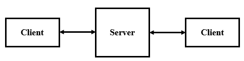
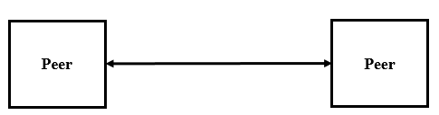
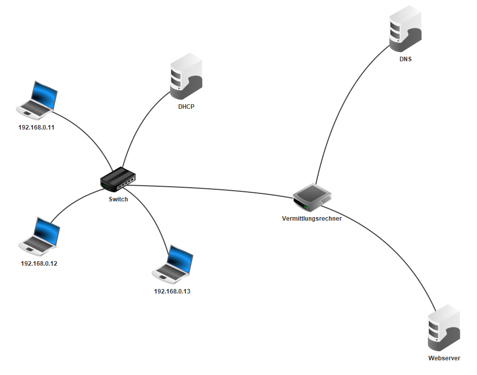
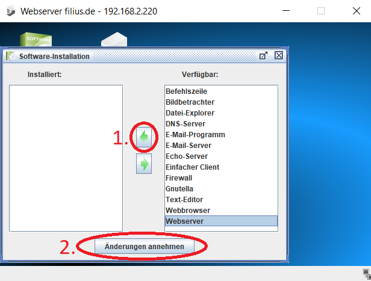
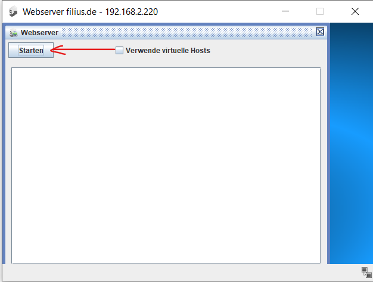
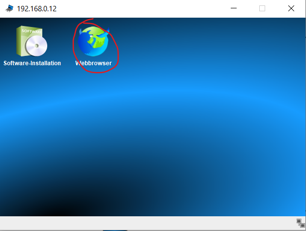
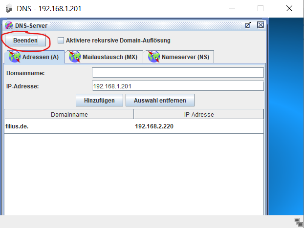

Wenn du eine WhatsApp-Nachricht schickst, läuft sie über die Server von Meta. Eine Bitcoin-Überweisung dagegen wird von tausenden gleichberechtigten Rechnern geprüft, und OPAL oder LernSax laufen in Rechenzentren, die du nie gesehen hast. Diese Seite klärt, wie Netzwerkdienste organisiert sein können (zentral, dezentral, Client-Server, Peer-to-Peer, Cloud) und wie Daten überhaupt durch ein Netz vermittelt werden.
Netzwerkdienste ermöglichen die Kommunikation und den Datenaustausch über Netze. Je nachdem, wie Datenverarbeitung und -speicherung organisiert sind, unterscheidet man zentrale und dezentrale Dienste.
Zentrale Netzwerkdienste verlassen sich auf einen oder mehrere zentrale Server, die Daten verarbeiten, speichern und an Clients weiterleiten. Beispiele:
Dezentrale Netzwerkdienste verteilen Datenverarbeitung und Speicherung auf viele Rechner, sodass es keinen einzelnen Ausfallpunkt gibt. Ein prominentes Beispiel ist die Blockchain: Sie wird für Kryptowährungen wie Bitcoin genutzt, aber auch für andere Anwendungen, bei denen Transaktionen fälschungssicher protokolliert werden sollen.
Das Client-Server-Prinzip beschreibt die Rollen, die Computer bzw. Programme in einem Netz einnehmen. Ein Server stellt Ressourcen wie Dateien, Datenbanken, Anwendungen oder Dienste bereit. Ein Client baut eine Verbindung zu einem Server auf und nutzt dessen Ressourcen: Er sendet eine Anfrage (Request), und der Server antwortet mit den angeforderten Daten (Response). Die Kommunikation läuft im Internet über das Internetprotokoll (IP).
Ein typisches Beispiel ist das World Wide Web: Webbrowser sind Clients, die auf Webserver zugreifen, um Webseiten abzurufen. Ein Client kann auf einem Desktop-PC, Laptop, Smartphone oder einem anderen netzwerkfähigen Gerät laufen. Ein Server kann ein eigens dafür konfigurierter Rechner sein oder einfach ein Programm, das auf einem vorhandenen Computer läuft.
Vorteile des Client-Server-Prinzips sind die zentrale Verwaltung der Ressourcen, die Skalierbarkeit und die Möglichkeit, die Leistung des Servers gezielt zu optimieren. Nachteil: Fällt der Server aus, können die Clients nicht mehr auf die Ressourcen zugreifen.

Beim Peer-to-Peer-Prinzip ist jeder Teilnehmer ein gleichwertiger Knoten (Peer), der direkt mit anderen Teilnehmern kommuniziert, ohne dass ein zentraler Server erforderlich ist. Jeder Peer ist gleichzeitig Client und Server.
P2P-Netze werden häufig für Filesharing verwendet: Benutzer laden Dateien direkt von anderen Benutzern herunter, statt sie von einem zentralen Server zu beziehen. Auch Kryptowährungen nutzen das P2P-Prinzip, um Transaktionen direkt zwischen den Teilnehmern abzuwickeln, ohne dass eine zentrale Kontrollinstanz wie eine Bank erforderlich ist.
Das P2P-Prinzip bietet Skalierbarkeit, Flexibilität und Widerstandsfähigkeit gegen Ausfälle, da das Netz ohne zentrale Komponente weiterarbeiten kann. Allerdings ist es schwieriger, die Sicherheit und die Integrität der Daten zu gewährleisten, weil sich die Aktivitäten aller Knoten kaum überwachen und kontrollieren lassen.

Beim Cloud-Computing mietet man Rechenleistung, Speicher oder fertige Anwendungen bei einem Anbieter und nutzt sie über das Internet. Technisch ist das meist ein Client-Server-Prinzip, bei dem die Server in großen Rechenzentren des Anbieters stehen. Man unterscheidet grob:

Vermittlungsverfahren bestimmen, wie Daten durch ein Netz vom Sender zum Empfänger gelangen. Man unterscheidet Leitungsvermittlung, Nachrichtenvermittlung und Paketvermittlung.
Vor der Übertragung wird eine durchgehende Verbindung (Leitung bzw. Kanal) zwischen Sender und Empfänger geschaltet. Sie bleibt für die gesamte Dauer der Kommunikation reserviert, auch wenn gerade niemand spricht. Klassisches Beispiel ist das alte analoge Telefonnetz. Vorteil: garantierte Bandbreite und gleichbleibende Verzögerung. Nachteil: Die reservierten Ressourcen sind oft ungenutzt.
Die gesamte Nachricht wird als Ganzes von Knoten zu Knoten weitergereicht. Jeder Zwischenknoten speichert die komplette Nachricht, bevor er sie weiterleitet (Store-and-Forward). Das Verfahren wird heute kaum noch verwendet, weil es bei großen Datenmengen ineffizient ist und die Zwischenknoten viel Speicher brauchen.
Die Paketvermittlung teilt Nachrichten in kleinere Pakete auf. Die Pakete verschiedener Verbindungen teilen sich die Leitungen; die Zwischenknoten können ein Paket schon weiterleiten, während das nächste noch ankommt. Das erhöht die Auslastung und Effizienz des Netzes. Es gibt zwei Varianten:
Alltag: OPAL und LernSax sind Cloud-Dienste für sächsische Schulen: Du bist mit deinem Browser der Client, die Server stehen im Rechenzentrum des Betreibers. Windows-Updates werden dagegen teilweise per P2P verteilt: Rechner im selben Netz geben bereits geladene Update-Teile an ihre Nachbarn weiter und entlasten so die Internetleitung.
Beruf: Fachinformatikerinnen und Fachinformatiker für Systemintegration entscheiden in Firmen, Schulen und Verwaltungen regelmäßig, ob ein Dienst im eigenen Serverraum oder in der Cloud betrieben wird. Sie vergleichen Kosten, Verfügbarkeit und Datenschutz (Serverstandort, Auftragsverarbeitungsvertrag nach DSGVO). Kommunale IT-Dienstleister in Sachsen, etwa Lecos in Leipzig, betreiben dafür eigene Rechenzentren für Städte und Schulen.
Zentrale Netzwerkdienste sind effizient und einfach zu verwalten. Der zentrale Server ist aber ein Single Point of Failure, und der Betreiber hat Zugriff auf alle Daten (Datenschutz).
Dezentrale Dienste erhöhen die Ausfallsicherheit und können den Datenschutz verbessern, sind aber aufwendiger zu verwalten und zu koordinieren.
Client – ein Programm bzw. Gerät, das Dienste, Ressourcen oder Daten von einem Server anfordert und empfängt.
Server – ein Programm bzw. Gerät, das Dienste, Ressourcen oder Daten für Clients im Netz bereitstellt, z. B. Web-, E-Mail-, Datei- oder Datenbankserver.
Internet und WWW sind nicht dasselbe. Das Internet ist der weltweite Verbund von Rechnernetzen, die über IP kommunizieren. Das World Wide Web ist nur einer der Dienste, die über das Internet laufen (Webseiten per HTTP/HTTPS). E-Mail, DNS, Online-Spiele oder Videotelefonie nutzen ebenfalls das Internet, gehören aber nicht zum WWW.
Peer-to-Peer (P2P) – Netzarchitektur, bei der alle Teilnehmer gleichwertige Peers sind, die direkt miteinander kommunizieren und jeweils sowohl Dienste anbieten als auch nutzen.
Cloud-Dienst – über das Internet bereitgestellte IT-Ressource, die ein externer Anbieter betreibt. Man gewinnt Verfügbarkeit und Skalierbarkeit, gibt aber Kontrolle über Daten und Betrieb ab.
Leitungsvermittlung reserviert einen Kanal für die ganze Verbindung, Paketvermittlung teilt die Leitungen zwischen vielen Paketen auf. Paketvermittlung nach dem Datagrammprinzip ist das Rückgrat des Internets und ermöglicht eine flexible und effiziente Datenübertragung.
Ordne jeweils zu: zentral oder dezentral? Client-Server oder Peer-to-Peer?



